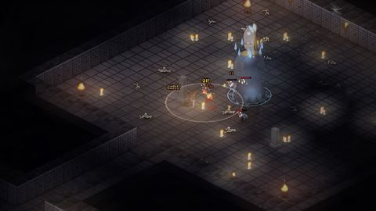
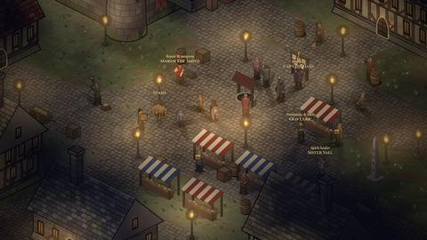
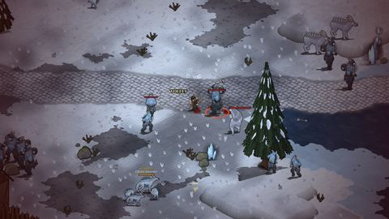
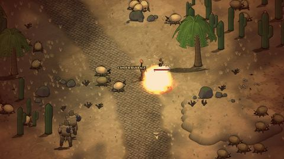
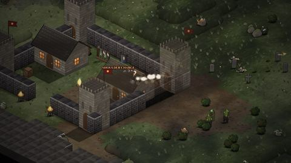
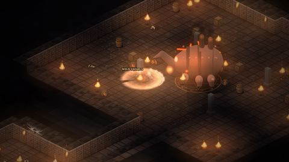
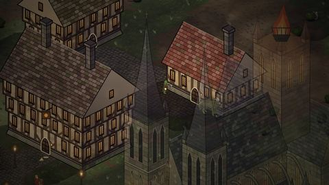
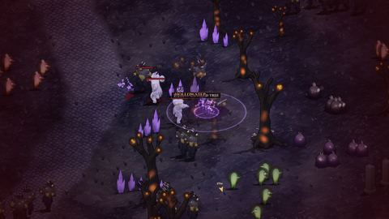

Press kit
Emberwrought — Chronicles of the Hollowmark
The last fire in the Hollowmark is going out. Fight through dungeons that are built anew every time you descend, master the combos of over twenty classes, and come home to a homestead your villagers build: a somber dark-fantasy action RPG in stylized 3D.
Fact sheet
- Name
- Emberwrought — Chronicles of the Hollowmark
- Genre
- Action RPG with a homestead: isometric dungeon crawler, dark fantasy
- Platforms
- PC browser (Chrome, Edge, Firefox); a closed alpha runs in the browser on itch.io this December. Steam: Coming 2027.
- Release
- Coming 2027
- Playable races
- 16
- Developer
- Jonathan Kuiper, solo developer, at ChaosVibe
- Price
- To be announced
- Languages
- English
- Controls
- Mouse and keyboard; gamepad and touch supported
About the game
The three beacons that held back the dark have gone cold. In Gravenhold, the last lit town, the dead no longer stay buried. Raise your hearth on the ruins of a dead one, take up a blade or a grimoire, and go down into the dark to light the beacons again.
- Combat with weight. Fast, hands-on fighting: chain light and heavy blows into combos, roll through a wind-up, block and parry. Every class fights its own way.
- Over twenty classes, from the Warrior, Mage and Rogue to the Templar, Necromancer, Skald, Chronomancer, Plague Doctor and Shapeshifter, each with its own combos, skills and talents.
- Sixteen peoples, one dying world. Play as a human or a dwarf, a crow-headed Rookfolk, an ash-skinned Ashborn, a Croakfolk, a Shellback, a Pandakin, and more. Each land has its own dead, its own hazards and its own way of killing you.
- Dungeons that never repeat. Built fresh every time you enter, with traps, ambushes and a boss at the bottom: Morvane the Hollow Bishop; Gulchmaw, Mother of Bile; Varg the Slagborn. Storm the raider forts that hold every land, and climb into the caves under the mountains.
- Loot built from parts. Every weapon is assembled from pieces that change how it fights, with elements that combo off each other.
- A home worth fighting for. You choose what to build on your homestead, and your villagers raise it over time. Crops grow in real time, even while you're away.
- A road from level 1 to 60, from the Barrow Fields around Gravenhold to lands far stranger beyond the Hollowmark.
History
Development began in November 2026. Early builds were played free in the browser on itch.io, shaped week by week by players' bug reports. A small closed alpha runs over the December holidays, ahead of a Steam release in 2027.
Logos

Screenshots
1920 × 1080, captured in the game on 11 November 2026. Click to open the full size.
















Capsule art and trailer
Coming with the Steam page.
Contact
For press and creators: write to contact@chaosvibe.com.